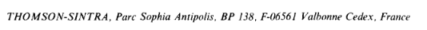

La percolation avec Elasticsearch pour aligner un référentiel
Anne L'Hôte
Département des outils d'aide
à la décision - SIES - MESR

Publication scientifique

Publication scientifique

- Titre
- Auteur(s)
- Affiliation(s)
- Date de publication
- Résumé
- Mots-clés
- ...
Publication scientifique

Publication scientifique
Les limites ⛔
- Champ texte libre (Centre Nationale de la Recherche Scientifique)
- Multilinguisme (French National Centre for Scientific Research)
- Acronyme, alias (CNRS)
- Evolution du paysage de l'ESR (fusion, fermeture, renommage)
Un référentiel : Research Organization Registry (ROR)
- Structures de recherche
- International
- Récent (2019)
- Open data (CC0)
- Plus de 100 000 structures
Un référentiel (ROR)

Un référentiel (ROR)
Et maintenant ?
Comment faire le lien entre un texte libre et un référentiel ?
ü§ù
Elasticsearch !
Et son percolate query
üéâ
Elasticsearch
“The percolate query can be used to match queries stored in an index. The percolate query itself contains the document that will be used as query to match with the stored queries.“
selon la documentation
Elasticsearch
Elasticsearch
Liste de critères disponibles pour RoR
- ror_acronym
- ror_acronym_unique
- ror_city
- ror_country
- ror_country_code
- ror_grid_id
- ror_id
- ror_name
- ror_name_unique
elasticsearch
stratégie : critère_01 AND critère_02 AND critère_03
famille de stratégies : stratégie_01 OR stratégie_02 OR stratégie_03
stratégies
Elasticsearch
R√©sultats üìà
| matcher | precision | recall |
|---|---|---|
| country | 0.9953 | 0.9690 |
| grid | 0.7946 | 0.5944 |
| rnsr | 0.9654 | 0.8192 |
| ror | 0.8891 | 0.2356 |
Ressources
- üêô Code (Github)
- üêã Image Docker
- üñãÔ∏è Publication (preprint)
- üîó Site d√©mo
Des questions ?
anne.lhote@recherche.gouv.fr